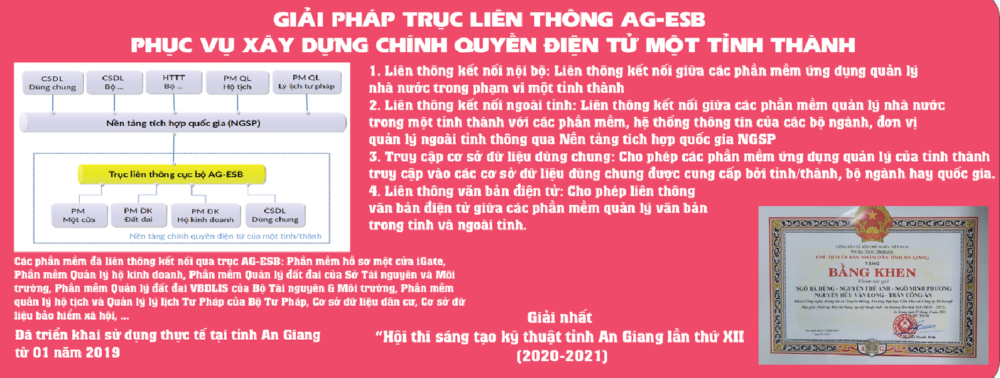
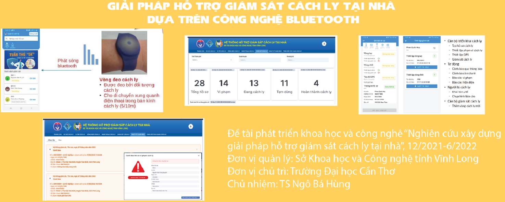
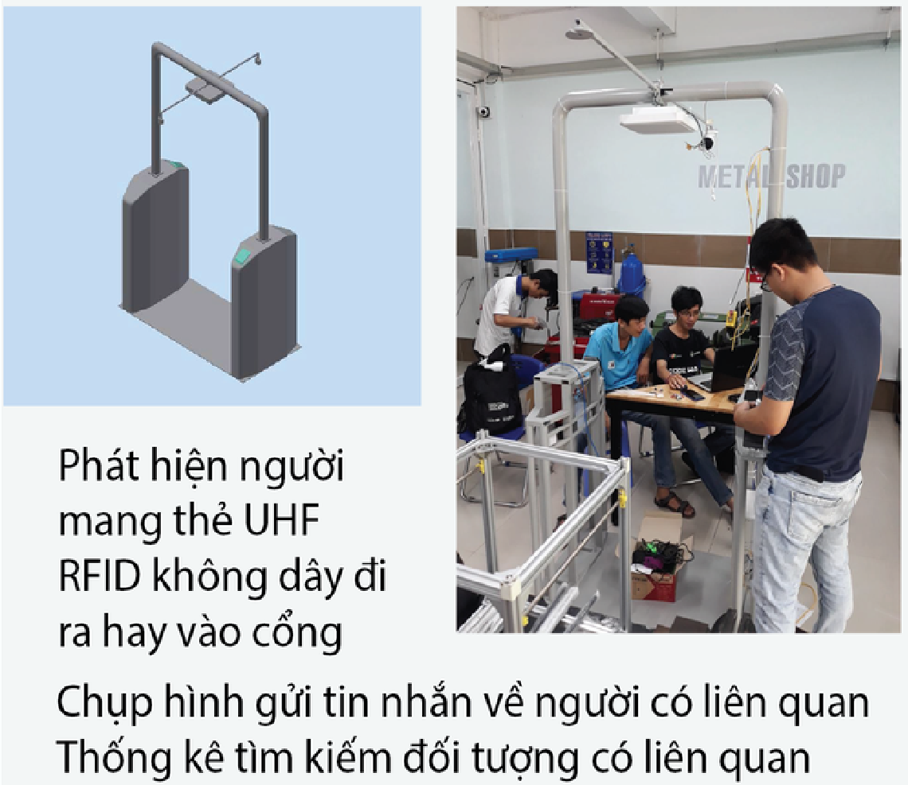
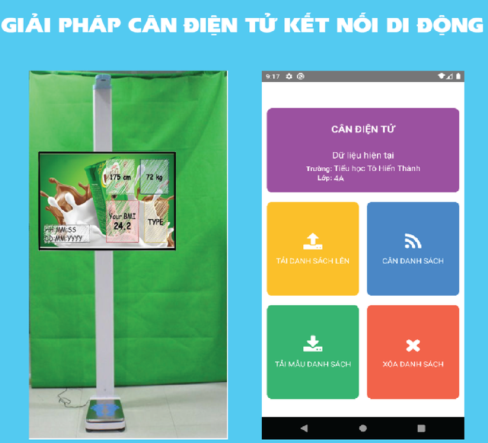
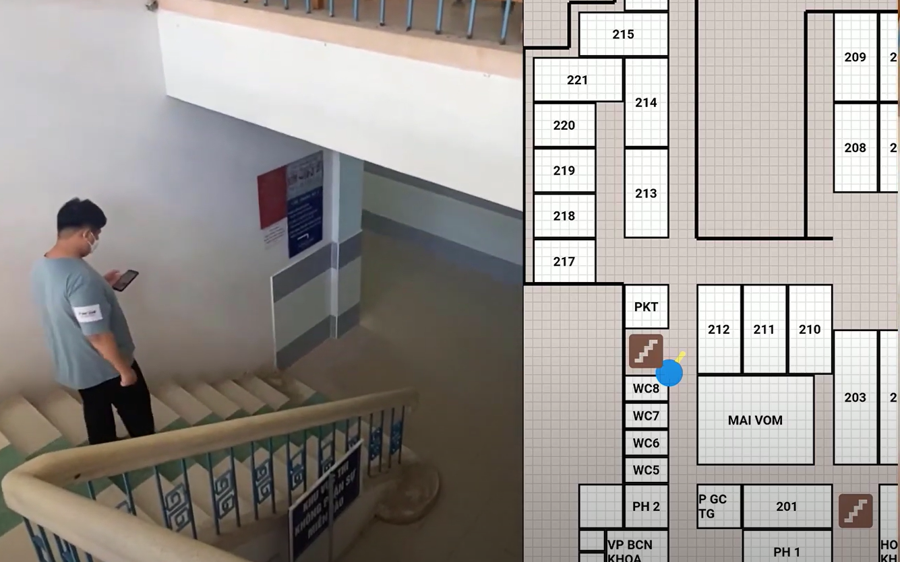

Khoa Mạng máy tính và Truyền thông
Khoa tham gia tích cực vào hoạt động nghiên cứu khoa học, thu hút thành công các nguồn tài trợ nghiên cứu quan trọng cả trong và ngoài trường. Giảng viên của khoa đã có kinh nghiệm chủ trì, tham gia, tư vấn, thực hiện chính, hoặc phản biện, cho nhiều đề tài các cấp từ cấp cơ sở, cấp thành phố đến cấp Nhà nước, trong đó nhiều đề tài đã được ứng dụng vào thực tiễn. Giảng viên và sinh viên của Khoa cũng đóng góp cho nghiên cứu khoa học thông qua việc xuất bản rộng rãi các sách, chương sách, cũng như trong các bài báo/báo cáo khoa học đã được công bố trong các tạp chí, hội nghị uy tín thuộc danh mục ISI/Scopus và danh mục bài báo tính điểm công trình của HĐCDGSNN.
Các lĩnh vực nghiên cứu chuyên sâu
- Mạng máy tính, Phần mềm tự do nguồn mở (Trưởng nhóm: TS.GVC. Ngô Bá Hùng)
- An toàn thông tin, an ninh mạng (TN: TS. Trần Thị Tố Quyên)
- Dữ liệu lớn, tính toán hiệu năng cao, điện toán đám mây (TN: TS.GVC. Phan Thượng Cang)
- Khoa học dữ liệu, máy học, robot, internet kết nối vạn vật (TN: PGS.TS.GVCC. Đỗ Thanh Nghị)
Một số công trình NCKH đã công bố
Các giáo trình đã xuất bản

Giáo trình đã xuất bản - Khoa Mạng máy tính và Truyền thông
- PGS. TS. Đỗ Thanh Nghị, PGS. TS. Phạm Nguyên Khang, Phạm Thế Phi, “Lập trình Python”, Giáo trình Khoa CNTT-TT, ĐHCT, 2019.
- TS. Phan Thượng Cang, TS. Ngô Bá Hùng, TS. Trần Thị Tố Quyên. "Giáo trình Phát triển ứng dụng hướng dịch vụ". ĐHCT, 2019.
- TS. Trần Công Án, ThS. Nguyễn Hữu Vân Long. "Giáo trình Công nghệ J2EE". ĐH Cần Thơ, 2019.
- TS. Trần Công Án, ThS. Nguyễn Công Huy. "Giáo trình Lập trình hướng đối tượng". ĐHCT, 2016.
- TS. Ngô Bá Hùng, ThS. Đoàn Hòa Minh. "Lập trình cho thiết bị di động". Đại học Cần Thơ, 2016.
- PGS. TS. Đỗ Thanh Nghị, TS. Trần Công Án, TS. Phan Thượng Cang, TS. Lâm Chí Nguyện. "Giáo trình lập trình Web". NXB ĐHCT, 2015
- PGS. TS. Phạm Nguyên Khang, PGS. TS. Đỗ Thanh Nghị, “Giáo trình kỹ thuật đồ họa”, NXB Trường ĐHCT, 2015.
- PGS. TS. Đỗ Thanh Nghị, TS. Nguyễn Văn Hòa, TS. Đỗ Hiệp Thuận, “Lập trình song song”, NXB Trường Đại học Cần Thơ, 2014.
- TS. Ngô Bá Hùng, ThS. Nguyễn Phú Trường, “Giáo trình các hệ thống phân tán”, NXB Trường ĐHCT, 2012.
- PGS. TS. Đỗ Thanh Nghị, TS. Phạm Nguyên Khang, “Giáo trình nguyên lý máy học”, NXB Trường ĐHCT, 2012.
- PGS. TS. Đỗ Thanh Nghị, TS. Lê Thanh Vân, “Giáo trình các hệ tri thức và khai thác dữ liệu”, NXB Trường ĐHCT, 2012.
- PGS. TS. Đỗ Thanh Nghị, PGS. TS. Phạm Nguyên Khang, “Giáo trình Linux và phần mềm nguồn mở”, NXB Trường ĐHCT, 2012.
- PGS. TS. Đỗ Thanh Nghị, “Khai mỏ dữ liệu : Minh họa bằng ngôn ngữ R”, NXB Trường ĐHCT, 2011.
- ThS. Phạm Hữu Tài. "Giáo trình môn Giải quyết sự cố mạng". Khoa CNTT, 2010.
- TS. Ngô Bá Hùng, “Giáo trình Thiết kế & cài đặt mạng”, NXB Trường ĐHCT, 2003.
- TS. Ngô Bá Hùng, ThS. Nguyễn Công Huy. "Lập trình truyền thông". ĐH Cần Thơ, 2000.
Một số đề tài NCKH gần đây
- Detection of the key courses affecting the learning outcomes of information technology students
- Research on building an intelligent system for automated answering the questions related to administrative procedures
- Tối ưu hóa Join đệ quy trên tập dữ liệu lớn trong môi trường MapReduce với Spark (2016)
- Giải pháp trục liên thông AG-ESB phục vụ xây dựng chính quyền điện tử một tỉnh thành, 2020-2021
- Giải pháp hỗ trợ giám sát cách ly tại nhà dựa trên công nghệ Bluetooth, 2021-2022
- Giải pháp cổng điểm danh không chạm dựa trên công nghệ UFH RFID
- Giải pháp cân điện tử kết nối di động
- Ứng dụng dẫn đường trong nhà dựa trên công nghệ bluetooth năng lượng thấp BLE Indoor navigation



